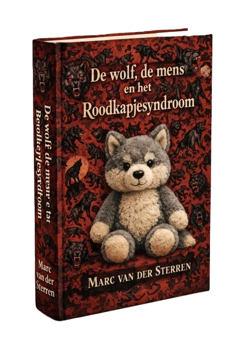

Een boek in wording
De wolf, de mens en het Roodkapjesyndroom
Tien jaar na de terugkeer van de wolf in Nederland staan voor- en tegenstanders lijnrecht tegenover elkaar. Journalist Marc van der Sterren zoekt uit waar onze angst vandaan komt — en ontdekt dat die ouder is dan de wolf zelf terugkwam.

roodkapjesyndroom
het; o; neol.
angst van mensen voor wolven, mede veroorzaakt door het sprookje Roodkapje. De term werd gemunt in 1996, lang voordat de eerste wolf in 2015 terugkeerde in Nederland. Jan Sloothaak van Trouw tekende de woorden op uit de mond van wolvenliefhebber Theo van Hilst, die ermee wilde duiden dat mensen onterecht bang zijn gemaakt voor de wolf.
Maar wie het sprookje kent, weet dat Roodkapje onterecht níet bang was voor de wolf…
Verder lezen